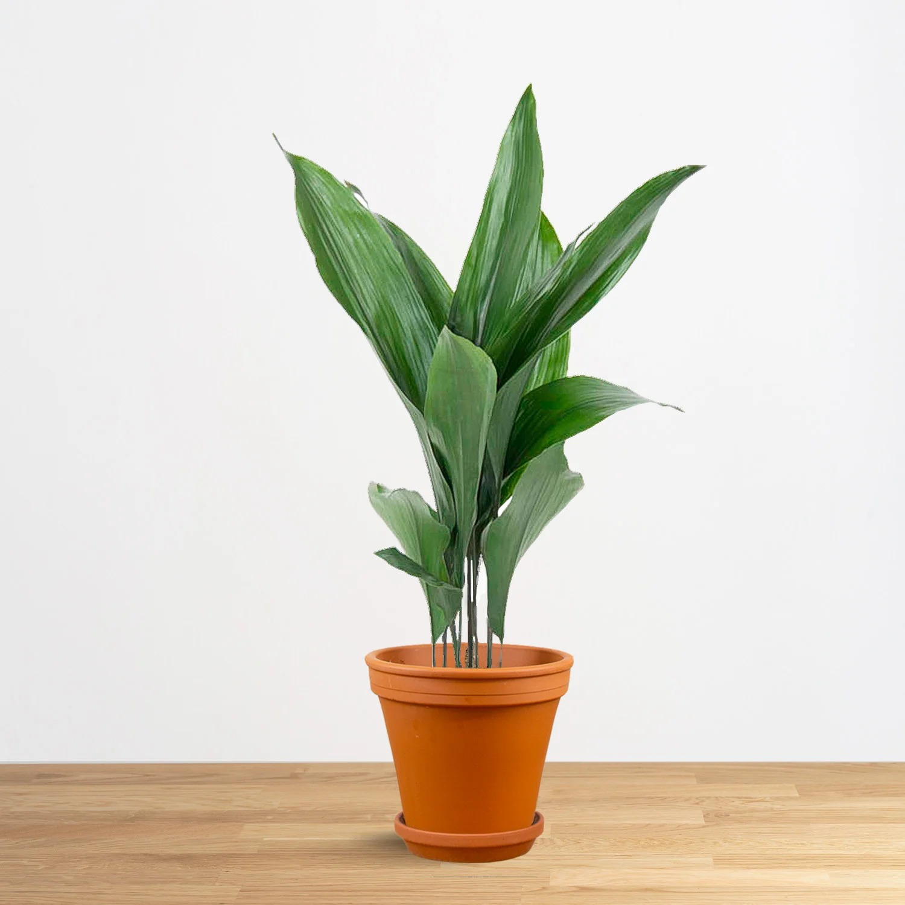

Aspidistra elatior (Cast iron plant)

About Cast Iron Plant
Aspidistra elatior, commonly known as the Cast Iron Plant, is renowned for its tough, resilient nature and ability to thrive in low-light conditions. It’s appreciated for its broad, dark green leaves and minimal care requirements.
Care Tips:
- Light: Prefers low to moderate, indirect light; can tolerate low light.
- Water: Keep soil evenly moist; let top inch dry out.
- Temperature: Thrives in temperatures between 45-75°F (7-24°C).
- Fertilizer: Feed with balanced fertilizer every 1-2 months in growing season.